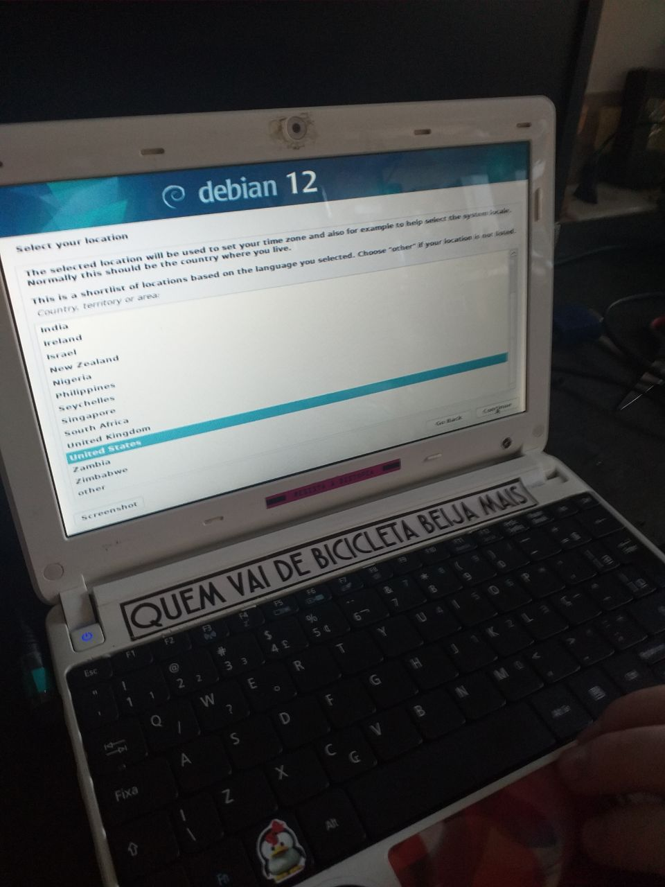
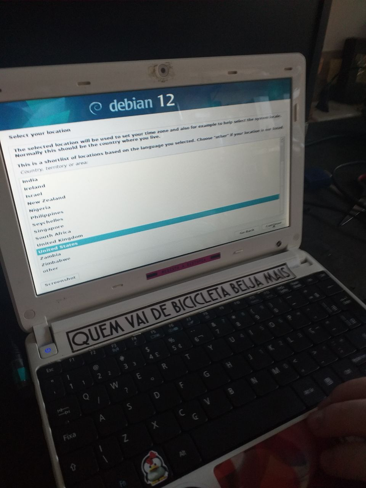

Revivendo um netbook com linux
Introdução
No último final de semana, resolvi dar uma atenção pra um netbook que estava abandonado no hackerspace.
Eu já tinha visto ele funcionando (na época tava rodando um lubuntu) e lembro que tentei acessar alguns sites pelo firefox, mas estava tão lento que acabei abandonando.
Alguns meses depois, fui tentar ligá-lo novamente e ele não funcionava. Pelo visto tinha sido derrubado e deixado para morrer.
Resolvi dar uma nova chance pra esse Aspire One D270 - 1655 viver novos dias de glória.

Netbook na bancada antes do início da inspeção.
Eu queria usar esse pc como um daily driver, e pra isso eu precisava que ele operasse softwares comuns (como navegador e editor de texto) com uma performance aceitável: isso significa que o boot da máquina tem que ocorrer num intervalo de < 2min, conseguir renderizar páginas com javascript pesado, e rodar alguns projetos básicos em python sem travar.
Configurações do sistema
O computador tem uma configuração bem modesta, com ~4gb de ram e um processador Atom N2600, linha de 2011.

Saída do comando screenfetch no terminal
Inspecionando o hardware
Pra descobrir o motivo do pc não ligar, começamos verificando o carregador e a bateria.
O próximo passo foi a remoção do teclado pra ter acesso a placa mãe e componentes.


Removendo a bateria, a parte de baixo é exposta, dando acesso ao HD, memória ram, cooler do processador e placa de rede.

Parte inferior do netbook com bateria desconectada e tampa removida
Depois, foi feita a troca do HD por um SSD que tinhamos com um distro instalado, e o pc resolveu ligar.
Netbook em processo de boot sem o teclado
A mensagem na tela (“No bootable device - insert boot disk and press any key”) indica uma característica dessa máquina: ela não suporta boot no modo UEFI, que é como esse SSD de teste foi configurado.
Com o PC ligando, devolvemos o HD original. Colocar o teclado de volta foi uma função enorme.
Ajustando o conector do teclado
Tentativas iniciais
Sabendo que uma instalação moderna de Ubuntu seria demais pra essa máquina, comecei tentando colocar um Debian desktop.
 

Infelizmente durante a instalação já dava pra perceber que ia ficar pesado demais. Com o OS rodando, deu pra notar bastante lag no cursor e uma demora infernal pra abrir os apps.
A segunda tentativa foi o Puppy Linux, um distro minimalista “grandpa ready”, pesando cerca de ~500mb, que usa um formato onde o distro é carregado via pendrive e copiado pra memória ram, e o usuário cria save files no disco rígido, que servem pra persistir dados e programas entre boots.

Desktop padrão do Puppy Linux
O processo de instalação foi relativamente tranquilo, mas alguns pontos me fizeram desistir do Puppy Linux:
-
Os softwares instalados por padrão são muito antigos.
O navegador padrão é o PaleMoon, que não suporta algumas features modernas do javascript (como
Object.keys()…) o que faz vários sites, como Mastodon, Github e Youtube se tornarem inutilizáveis. -
O distro é bastante instável.
Algumas soluções necessárias a nível de GRUB, por exemplo, não funcionam todas as vezes. O boot tem grande chance de não funcionar se algum USB estiver conectado. O processo de iniciar o X (interface gráfica por trás do gerenciador de janelas) é um tiro no escuro, falhando aleatóriamente, precisando reiniciar a máquina várias vezes até funcionar.
-
A documentação oficial é bem fraca e o conhecimento está espalhado em fóruns.
O distro em si tem uma ótima performance, mas eu fiquei com a sensação de que ele é feito pensando em usuários bem avançados de Linux, que conseguem depurar erros comuns sozinhos.
A experiência de fuçar nos fóruns (o antigo e o novo) e depurar os erros encontrados foi interessante e esse é um distro que eu pretendo dar mais uma chance no futuro.
A filosofia e estética do Puppy Linux são muito carismáticas
Por fim, resolvi tentar instalar o Arch Linux, confiante de que deve existir alguma combinação de GUI que exija pouco do computador.
Instalando Arch
Instalar o Arch Linux é surpreendentemente tranquilo. A combinação de uma ótima wiki, que cobre 99% dos casos, com uma comunidade extremamente ativa, significa que tudo está ao alcance de uma busca do google.
Abaixo eu relato os passos utilizados ao seguir o guia de instalação, com alguns comentários adicionais em situações que precisei dar uma pesquisada.
Passo a passo da instalação realizada (em inglês)
Installation steps
-
Download the image via torrent: https://archlinux.org/download/
-
Flash to USB using the ISO as is: https://wiki.archlinux.org/title/USB_flash_installation_medium#Using_macOS_dd
-
Boot the live environment from the USB
- Inserted the pendrive, booted the PC and used F12 to select the pendrive as the boot device.
- At this step the screen went black after selecting “Arch Linux Install medium”
- Added nomodeset to the kernel parameter, as pointed out by https://unix.stackexchange.com/a/727978. This is done, on the arch linux boot loader menu, by pressing
and writing nomodeset, then pressing enter.
-
Set the console keyboard layout and font
loadkeys br-abnt2
-
Verify the boot mode
- the
/sys/firmware/efi/fw_platform_sizefile does not exist, indicating that the system booted in BIOS (as expected).
- the
-
Connecting to the internet
- used
ip linkand verified that my wlan0 adapter is listed - used
iwctlto connect to wifi
- used
-
Update the system clock
- used
timedatectl set-timezone America/Sao_Paulo
- used
-
Partition the disks
-
I didn’t have to to anything as my disk was already layed out as
/dev/sda1 2G --> Linux swap /dev/sda2 976M --> Extended /dev/sda3 295G --> Linux /dev/sda5 976M --> Linux swapand I’m going to install arch in sda3.
-
-
Formatting the partitions
- used
mkfs.ext4 /dev/sda3andmkswap /dev/sda1.
- used
-
Mounting the file systems
- used
mount /dev/sda3andswapon /dev/sda1.
- used
-
Install the base package, Linux kernel and firmware
- used
pacstrap -K /mnt base linux linux-firmware. - noticed my download speed was too slow (~200KiB/s)
- CTRL^C to stop the current process (it will resume where stopped later on)
- ran
cp /etc/pacman.d/mirrorlist /etc/pacman.d/mirrorlist.backup - ran
reflector --verbose --latest 5 --sort rate --save /etc/pacman.d/mirrorlist - retry the downloads with
pacstrap -K /mnt base linux linux-firmwarewith speeds closer to 2Mib/s
- used
-
Install vim with
packmang -S vim. -
Generated an fstab file.
-
Changed root to the new system.
-
Set the timezone.
-
Set the localization.
- Uncommented
en_US.UTF-8 UTF-8andpt_BR.UTF-8 UTF-8lines - ran
locale-gen - created
/etc/locale.confwithLANG=en_US.UTF-8. - persist keyboard layout by creating
/etc/vconsole.confwithKEYMAP=br-abnt2
- Uncommented
-
Set the hostname with
echo whitearchie > /etc/hostname. -
Set the hostname in the /etc/hosts file.
127.0.0.1 localhost ::1 localhost 127.0.0.1 whitearchie.localdomain whitearchie -
Complete the network configuration by installing
NetworkManagerwithpacman -S networkmanagerandsystemctl enable NetworkManager. -
Set the root password with
passwd. -
Configure the bootloader (assuming we are a non UEFI install, or MBR):
-
run
pacman -S grub -
run
grub-install --target=i386-pc /dev/sdawhere i386-pc is deliberately used regardless of your actual architecture, and /dev/sdX is the disk (not a partition) where GRUB is to be installed. For example /dev/sda or /dev/nvme0n1, or /dev/mmcblk0
-
generate the grub configuration file with
grub-mkconfig -o /boot/grub/grub.cfg.
-
-
Reboot the machine by
- exiting the chroot environment with
exit - unmounting all the partitions with
umount -R /mnt - reboot with
reboot - remove the pendrive and turn computer on
- login with previously created root password
- exiting the chroot environment with
-
Initial config is done!
Additional sources:
- https://www.arcolinuxd.com/5-the-actual-installation-of-arch-linux-phase-1-uefi/
- https://wiki.archlinux.org/title/GRUB#Master_Boot_Record_(MBR)_specific_instructions
Setting up the environment
These are necessary house keeping tasks in order to run arch with an internet connection, graphical interface and non privileged user accounts.
Parallel downloads for pacman
We’ll start by enabling parallel downloads with pacman. Edit the /etc/pacman.conf file and search for ParallelDownloads under [options]. To enable it, remove the comment (#) from the beginning of the line.
I’ve left the default value of 5.
Setting the internet connection back
You will notice that after the first reboot, you won’t be able to access iwctl, and won’t have a connection.
Since we installed networkmanager, we have the nmcli utility installed.
Start by making sure the NetworkManager.service is started and enabled:
systemctl status NetworkManager
# if not running
systemctl start NetworkManager
# if not enabled
systemctl enable NetworkManager
If you’re not sure that network manager is the only network package you’ve installed, you can check by running:
systemctl --type=service
and stopping any other network related service in order to avoid conflicts.
List existing wifi networks with nmcli device wifi list and connect to your desired network with nmcli device wifi connect SSDID password my_new_password.
System time synchronization via NTP
Check the current time settings with timedatectl status.
If System clock synchronized shows no, activate it with
timedatectl set-ntp true
Setting up the GUI with i3
Turns out I love tilling window managers. They automatically allocate new windows by dividing existing screen space between applications.
You can also switch between different workspaces, each with its own set of apps.
i3 is very similar to other TWM such as Xmonad, awesome or yabai (for macOS).
I’ll be using i3 as its what I’m used to on other distros such as Ubuntu, but most X compatible window managers should share the same steps for installation and setting up.
Since arch comes with only the cli by default, let’s start by installing X, which is on the xorg-server package. We’ll include the xorg-init package which contains the helper script startx which is used to start X on demand.
pacman -S xorg-server xorg-xinit
Now we add the i3 related packages with
pacman -S i3-wm i3status dmenu xterm
…and that’s about it.
If prompted to choose a set of fonts, any will do (I’m going with the default gnu-free-fonts).
Now we need to inform our system to start X by default, and that X should load the i3 WM. This is done by creating a ~/.xinitrc file with a single line stating exec i3.
Start i3 by running startx.
On your first launch, you’ll be prompted to generate a config file at ~/.config/i3/config. Press enter to accept it. you can also choose between the win (power) key and alt as your modifier (key used to run i3 commands).
Setting up the keyboard layout on i3
While previously we’ve set the layout using /etc/vconsole.conf, in order to apply it to i3, we need to add the following to our i3 config file (defaults to ~/.config/i3/config):
echo 'exec "setxkbmap -layout br,us"' >> ~/.config/i3/config
You can go back to the cli with $mod + shift + e.
References:
- https://www.debugpoint.com/xmonad-arch-linux-setup/
- https://bbs.archlinux.org/viewtopic.php?id=66701
- https://suay.site/?p=610
- https://wiki.archlinux.org/title/Xorg
- https://wiki.archlinux.org/title/i3
- https://bbs.archlinux.org/viewtopic.php?id=140448
Setting up a non root user
It might be sensible to set up a non root user to perform day to day activities on the computer.
In order to allow regular users to escalate privileges when necessary (such as installing a package), we need the sudo package.
pacman -S sudo
Now we can add our new user by running
useradd -m -G wheel user_name
The -G wheel option adds the newly created user to the wheel group.
We now need to allow users in the wheel group to run commands using sudo. This is done by uncommenting (removing the #) from the /etc/sudoers file.
#%wheel ALL=(ALL:ALL) ALL
The last step is setting a password for your new user.
passwd new_user
Our last step is setting the default configuration files to our new user.
cp ~/.xinitrc /home/new_user/.xinitrc
mkdir -p /home/new_user/.config/i3
cp ~/.config/i3/config /home/new_user/.config/i3/config
echo startx >> /home/new_user/.bash_profile # optional!
Now you can safely reboot your machine and, this time, log in with your non root user.
Enabling audio
After a fresh install, arch linux might have sound playback disabled.
The Advanced Linux Sound Architecture (ALSA) is the part of the Linux kernel that manages the sound devices on your system.
The alsa related commands are installed with the alsa-utils package.
sudo pacman -S alsa-utils
After that, you can enable output with
amixer sset Master unmute
amixer sset Speaker unmute
amixer sset Headphone unmute
If you are still receiving no sound output, set up the volume with:
amixer sset Master 100%
amixer sset Speaker 100%
amixer sset Headphone 100%
source: https://davidtsadler.com/posts/arch/2020-08-31/enabling-audio-in-arch-linux/
Conclusão
Foi um processo árduo, mas eu tô surpreso com o quão utilizável é um computado antigo quando as escolhas de software levam em conta as limitações do hardware.
Netbook rodando Arch, com uma performance surpreendentemente boa.
Com a instalação proposta no item anterior, o pc consegue fazer um boot do zero e ter um navegador rodando em cerca de 1m30s, oque é muito melhor do que eu esperava.
Hoje em dia o maior desafio pra computadores antigos é o navegador, devido ao uso desenfreado de javascript pra fazer renderizações insanas que absolutamente destroem CPUs velhinhas e sticks de RAMs modestos.
Eu não acho que o caminho seja utilizar navegadores limitados, ou desativar o uso do javascript, por exemplo, pois isso te exclui de uma parte enorme da internet.
Eu espero que com o uso de server side rendering ganhando força novamente, os sites deixem de judiar tanto os usuários.
Dessa vez foi num de 2011, talvez na próxima, 2005.
De qualquer forma, espero que este post te deixe inspirado pra tirar aquele PC antigo do armário e botar ele pra rodar, seja com uma distro pronta, ou seja configurando um Arch Linux do zero.
Abraço!